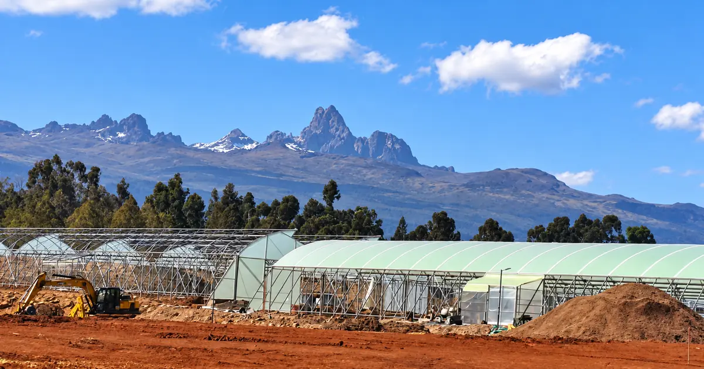
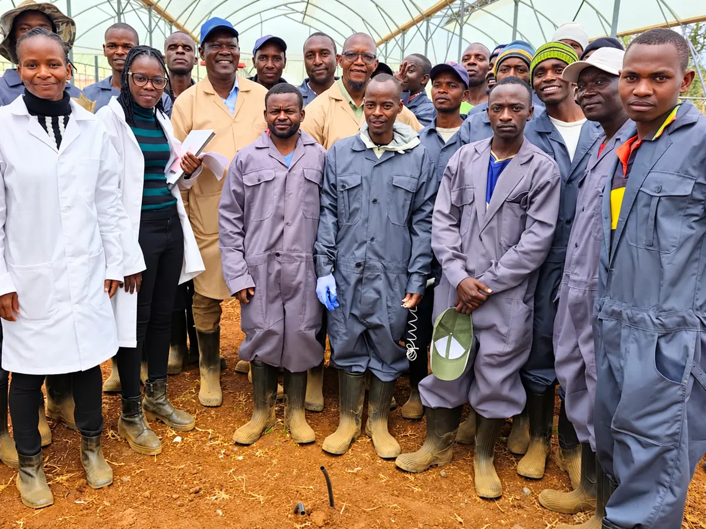

THURSD. ·
Altura Blooms Is Building a Rose Farm by Listening First
A trade-publication feature on Altura’s development and early buyer conversations.
Read the story on Thursd (opens a new tab)
Timau · Kenya · 2,200 m
Grown slowly at 2,200 metres on the slopes of Mount Kenya, for the florists who notice the difference.
Discover AlturaThe place. The growing method.
On the slopes of Mount Kenya, cool nights and bright days slow the growing cycle. At this height, a rose has time to become itself.
The rose
Cool equatorial nights stretch the growing cycle, so every bud has longer to form.
Time to develop the head and the bloom. Head size and petal count will be confirmed as the crop develops.
A steady opening. Time in the vase. Vase performance is part of our growing ambition; measured results are still to come.
T-Hybrid roses are the focus of our developing assortment. First commercial harvests are planned for 2027.
Explore the flowers
From the florist’s side of the table
Head. Stem.
Opening. Vase.
The rose is the argument. The shape of the head, the strength of the stem, the way a bloom opens in your work.
We listen to florists, importers, wholesalers and bouquet makers as we shape the assortment.
For Buyers
The people behind the rose
A team being built around knowledge, initiative and accountability. The people and the place are part of the flower’s story.
Meet AlturaA higher sense of care
The care continues
Irrigation, fertigation and environmental monitoring are part of the planned production system. Postharvest and cold-chain facilities are being developed for the journey beyond the greenhouse.
The name is not a metaphor.
2,200 metres · Timau · Kenya
For florists and buyers
Growing toward 2027
First commercial harvests are planned for 2027. The conversation starts now.
Tell us about the roses you choose, the work you make and the supply you are planning.
Start a conversationJournal
THURSD. ·
A trade-publication feature on Altura’s development and early buyer conversations.
Read the story on Thursd (opens a new tab)